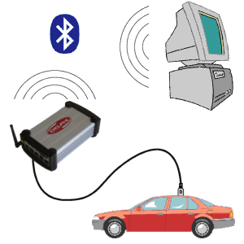

 |
Before starting diagnosis, you should check whether:
- the diagnosis cable between vehicle and diagnosis box is correctly connected
- the yellow Power lamp is lit
Communication between computer and diagnosis box takes place via Bluetooth.
No cable is required.
|